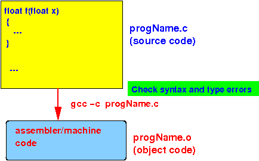
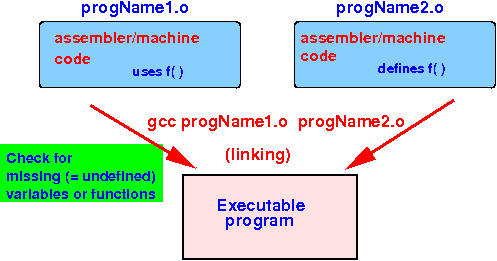

- Compile procedure:
- Compile
each C program
separately using the
following command:
gcc -c progName.cThis command will:
- Check the
C program source file
progName.c for
syntax errors and
if no errors,
translates the
program into
machine (= object) code
- The output is an object code file named progName.o
Schematically:

- Check the
C program source file
progName.c for
syntax errors and
if no errors,
translates the
program into
machine (= object) code
- After compiling
all the source C programs,
you "link" (= combine) all the
object code files using the
following command:
gcc -o execProgName progName1.o progName2.o ....
This command will:
- Collect all the
variable names and
function names
used in
the entire program
- Replace the
variable names and
function names with
the memory locations
where these
variables and
functions are
stored
in memory
- This linkage step will
result in an error when
some variable or
function is
not defined
- The linkage step does not check for type errors (that's done in the compile step)
- This linkage step will
result in an error when
some variable or
function is
not defined
Schematically:
 - Collect all the
variable names and
function names
used in
the entire program
- Compile
each C program
separately using the
following command:
- Previously, we
fixed the following
C program using
a function declaration:
#include <stdio.h> int f( short x ); // Declare f !! int main( int argc, char *argv[]) { short a = 2; int b; b = f( a ); // *** Use f( ) printf("a = %d, b = %d\n", a, b); } int f( short x ) { return(x*x); }
- Suppose we split this
C program into
2 files by
moving f( ) to
another file:
File 1 (p1.c) File 2 (p2.c) #include <stdio.h> int f( short x ); // Declare f !! int main( int argc, char *argv[]) { short a = 2; int b; b = f( a ); // **** Use f( ) printf("a = %d, b = %d\n", a, b); }#include <stdio.h> int f( short x ) { return(x*x); }Important note:
- The declaration of
function f( ) provides
the necessary information to
the C compiler to
enable it to
perform the necessary conversions !
- Therefore:
- The definition of the function f( ) need not be placed inside the same program file !!!
We can compile this C-program using the following commands:
gcc -c p1.c // Produces: p1.o gcc -c p2.c // Produces: p2.o gcc p1.o p2.o // Produces: a.out
- The declaration of
function f( ) provides
the necessary information to
the C compiler to
enable it to
perform the necessary conversions !
- Example Program:
(Demo above code)

- Prog file: /home/cs255001/demo/C/Multi-file-prog/p1.c + p2.c
How to run the program:
- To compile:
gcc -c p1.c
gcc -c p2.c
gcc p1.o p2.o - To run: ./a.out
- Important fact:
- You only need to
re-compile a
C program source file
when:
- You have made changes (= edits) to the content in the C program source file !!!
- You only need to
re-compile a
C program source file
when:
- Example:
suppose
we make changes
the p2.c file
File 1 (p1.c) File 2 (p2.c) #include <stdio.h> int f( short x ); // Declare f !! int main( int argc, char *argv[]) { short a = 2; int b; b = f( a ); // **** Use f( ) printf("a = %d, b = %d\n", a, b); }#include <stdio.h> int f( short x ) { return(x*x*x); // Change in p2.c }We can re-compile the multi-file C program using the following commands:
1. Re-compile the updated C program source files: gcc -c p2.c // Produces a new p2.o 2. Link again: gcc p1.o p2.o // Produce a new a.outUse /home/cs255001/demo/C/Multi-file-prog/p1.c + p2.c to do the demo
- The linking step detects
undefined (missing) variables and
functions
To illustrate the linkage step, consider this multi-files C program where the function f( ) in p2.c is changed to g( ):
File 1 (p1.c) File 2 (p2.c) #include <stdio.h> int f( short x ); // Declare f !! int main( int argc, char *argv[]) { short a = 2; int b; b = f( a ); // **** Use f( ) printf("a = %d, b = %d\n", a, b); }#include <stdio.h> int g( short x ) // Change in p2.c { return(x*x); } - Compile again... you will see that
f( ) is
not found error:
cs255-1@aruba (5244)> gcc -c p1.c // No syntax errors in p1.c cs255-1@aruba (5245)> gcc -c p2.c // No syntax errors in p2.c cs255-1@aruba (5246)> gcc p1.o p2.o // Linkage error !! p1.o: In function `main': p1.c:(.text+0x1c): undefined reference to `f' collect2: error: ld returned 1 exit status
Reason:
- main( ) called the function f( )
- But function f( ) is not defined in the program files p1.c and p2.c
Use /home/cs255001/demo/C/Multi-file-prog/p1.c + p2.c to do the demo